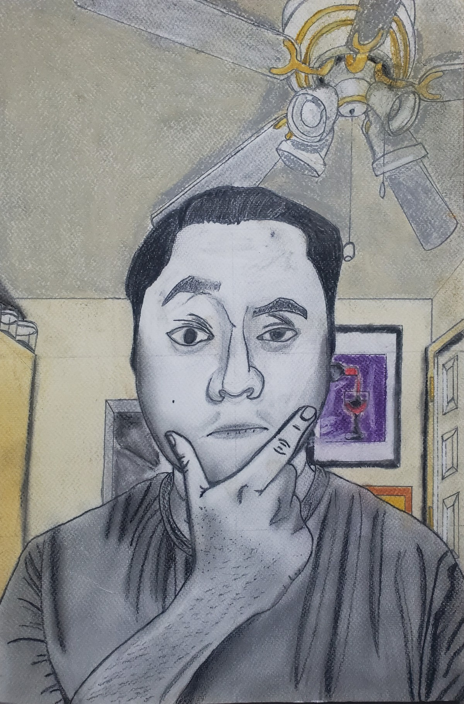
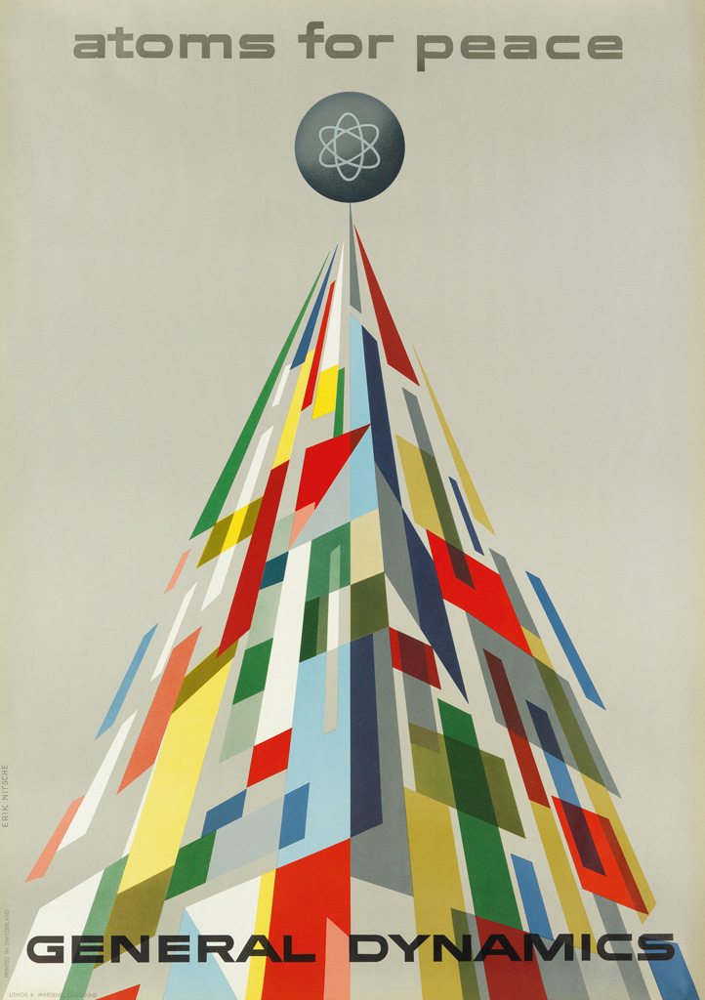
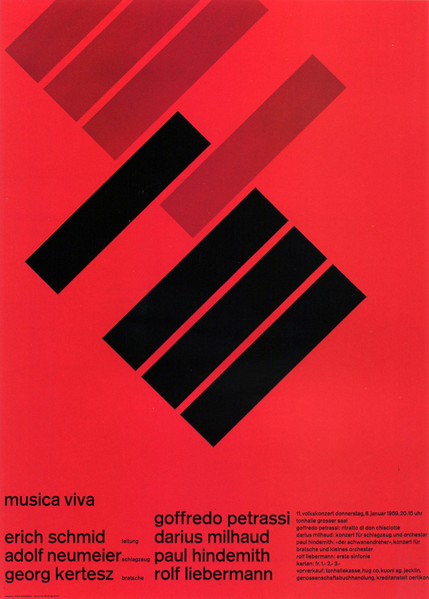

About Me
A brief summary of who I am and what artists inspire me.
My Story
For my whole life, I have lived in the somewhat small city of Norwalk, Connecticut, and in that city I have learned and experience many things, one of the most important thing i've learned was about myself and how passion and drive is what can really motivate me rather than just money and following the crowd. I started highschool with an early college program called P-Tech and when it was still new, it allowed me to experience college-level coursework while still in high school, and while made me look impressive, only had three majors I could focus: Computer Science, Software Engineering and Mobile Programming. My choice to go with Software Engineering and soon Computer Science as my majors was driven by how popular with people it was, how it would make me look good on a resume, and most importantly, make a lot of money. While the college classes I would take in highschool were pretty challenging, I manage through them, especially with the programming class which I barely managed. It would be until my first semesters in college where I would slowly realize my drive and motivation for Programming and software development just wasn't ther for me, and switched to Computer Science, an easier alternative and could make me almost as money as Software Engineering. But I would soon realize that the amount of money and making my resume look impressive was not a strong motivator and would constantly fail or withdraw from programming courses. In that era, I was truly ashamed of myself and so scared to talk about my academic progress to anyone especially my parents. I did not help that I saw many people I knew succeeding in their academic and professional lives, which only intensified my feelings of inadequacy and self-doubt. The moment I had to withdraw from a programming class for the fifth time, I knew I had to swith majors again. I remembered taking graphic design elective while in my first semester of college and how that was one of the only classes I truly enjoyed being in, thought maybe a Graphic Design major could be the right path for me. I soon took classes that taught me Adobe softwares such as Photoshop, Illustrator, and InDesign, and I realized that this was where my true passion lay. My Aunt once told me that if i'm not enjoying the major i'm taking then I won't do well academically, and I took that advice to heart. From that point on, I was not only making my academic comeback, but genuinely discovered a passion for the digital arts and how aware of how common it was in my daily life, whether I created or if it was created by someone else. Best of all, i'm not ashamed of myself anymore and learned that even in the face of failure, one always has the chance to get back up.
Inspirations
Erik Nitzche

This piece by Erik Nitzche, a Swiss designer is called "Atoms for Peace., General Dynamics". This is just one artwork for Atoms of Peace, as he created multiple to give a positive and optimistic view of atomic energy to oppose the publics negative and pessimistic view of said energy. Interestingly enough, Nitzche passed away in Danbury, Connecticut and inspires me just by how he likes to give his work an optimistic context to them and how his artstyle has a surreal, geometric, spacy fell to me. Nitzche sadly never copyrighted his work and never made a single cent from them, nevertheless his contributions to the art world have been invaluable, which has allowed it to influence countless artists, including myself.Josef-Muller Brockmann

This piece was created by Josef-Muller Brockmann, another Swiss graphic designer and typographer as he created this a concert poster for Musica Viva. Josef passed away in 1996, but his influence in the graphic design world cannot be understated. His works inspired me with how it is reminiscent of Bauhaus, but with his own geometric Swiss style to them. In a previous graphic design class, I based off a final project in college on some of his works.